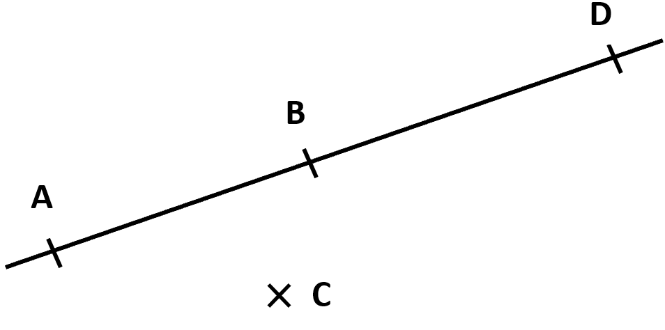
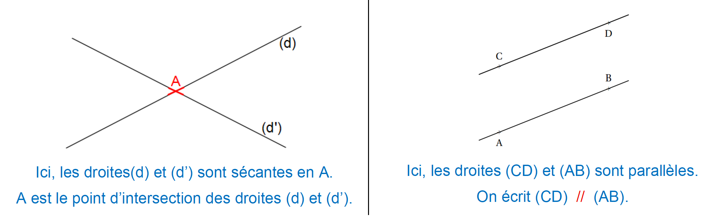

← Retour au choix des chapitres
Bases de la géométrie
Rappels


Points alignés et droites

Le point D est sur la droite (AB), on dit que "D appartient à la droite (AB)" et on note D ∈ (AB).
Le point C n'est pas sur la droite (AB), on dit que "C n'appartient pas à la droite (AB)" et on note C ∉ (AB).
Lorsque trois points sont sur une même droite, on dit qu'ils sont alignés. Ici, A, B, et D sont alignés.
Position relative de deux droites
Définitions
Lorsque deux droites ont un seul point en commun, on dit qu'elles sont sécantes. Le point où elles se rencontrent s'appelle le point d'intersection.
Deux droites qui ne sont pas sécantes sont parallèles.
Exemples :

Remarque : Lorsque l'on parle de deux droites, elles sont soit sécantes, soit parallèles.
Angles formés par deux droites
Deux droites sont sécantes si elles ont un point d'intersection. Elles forment alors quatre angles.
Exemple :

On note ces quatre angles de la manière suivante :
BEC ou CEB ;
BED ou DEB ;
DEA ou AED ;
CEA ou AEC
Deux droites sont perpendiculaires si elles sont sécantes et forment quatre angles égaux. Dans ce cas, on dit que chacun de ces angles est un angle droit.
Exemple :

On code un angle droit en faisant un petit carré sur la figure.
On dit que les droites (DC) et (AB) sont perpendiculaires en K et on note (DC) ⊥ (AB).